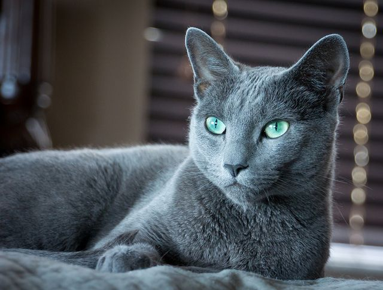

10. American Wirehair – $1200
The American Wirehair originates from upstate New York and is one of the rarest breeds in the United States. In 2003, there were only 22 cats of this breed registered with the Cat Fanciers’ Association and it is currently ranked in last position of the association’s list of breeds. This breed is a spontaneous mutation of the American Shorthair and this mutation was first known to occur in Vernon, upstate New York, in 1966. Physically, the appearance of an American Wirehair is the same as an American Shorthair, with the exception of its springy and wiry coat. It has a similar texture to that of wirehaired terrier dog breeds. Most American Wirehairs have golden eyes, with the exception of white cats which usually have blue or amber eyes. This breed is available in a wide spectrum of colors, but some are not accepted at competition. These include lilac, chocolate, and Himalayan.
9. American Curl – $1200
The American Curl is another cat that is the result of a spontaneous mutation. They originate from Lakewood, California, in 1981 and are distinctive because of their unusually shaped curled ears. This medium sized cat comes in both long and short haired varieties and weighs between five and ten pounds. A strange fact about this breed is that the kittens are born with straight ears that begin to curl within 48 hours of their birth. There are also strict rules about the angles of the curl. Show cats must have ears that curl to an angle between 90 and 180 degrees. However, too much curl is a bad thing because the cat will be disqualified from a competition if its ears touch the back of its skull. The American Curl has a soft and silky coat that lies flat against its body.
8. The Sphynx – $1200
The Sphynx cat is a breed that breeders began developing during the 1960s and in the following decade the inclusion of two hairless breeds of North American cats into the breeding pool led to the breed as it is known today. The most distinctive characteristic of the Sphynx is its lack of coat, although they do have a fine layer of hair over their skins. The skin is soft to touch and is the color that their coat would be if they had fur, including any markings. They also have distinctive facial features, including a wedge-shaped head, prominent cheekbones, large ears, a round abdomen, large paw pads, a thin tail, and a muscular body. This breed is intelligent, affectionate, curious, and energetic.
7. Scottish Fold Cats – $1500
This breed was originally known as the lop-eared cat but became known as the Scottish Fold in 1966. It is also known as the Longhair Fold, the Scottish Fold Longhair, and the Highland Fold. As its name suggests, this breed of cat originates from Scotland and has folded ears. The shape of its ears are caused by a genetic mutation that affects the cartilage. This gives the cat an appearance which has been described as owl-like. This breed was not accepted for showing in Europe until 1971 as there were concerns that the genetic mutation affecting the cartilage could cause various deformities in this breed. This breed is a medium-sized cat and females weigh between six and nine pounds while the males weigh between nine and 13 pounds. They usually have a round head and large round eyes. The Scottish Fold comes in both long and shorthaired varieties and their coats some in a vast range of colors, color combinations, and patterns. These are a generally good-natured breed of cat.
6. Russian Blue Cat – $1700
It is believed that this breed originates from the port of Arkhangelsk in Russia. As the name suggests, this is a blue cat, although it comes in a range of blue-gray colors, from shimmering silver to slate gray. One of the main reasons this breed of cat is so popular is that they have amazing personalities that make them ideal for family pets. They are affectionate, loyal, and develop close bonds with their owners. The coats of this cat are so dense that you can draw a pattern in their fur with your finger and it won’t disappear until you smooth it out with you hand. These are a medium-sized cat that usually weigh between five and 15 pounds. This breed has a long life expectancy compared to many other breeds as they can live for up to 20 years. However, there are many examples of Russian Blues living for as long as 25 years.